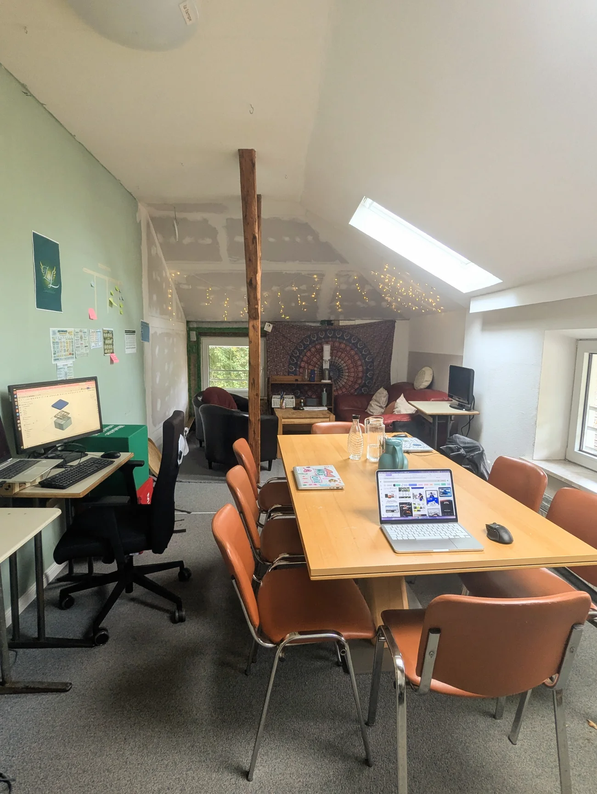
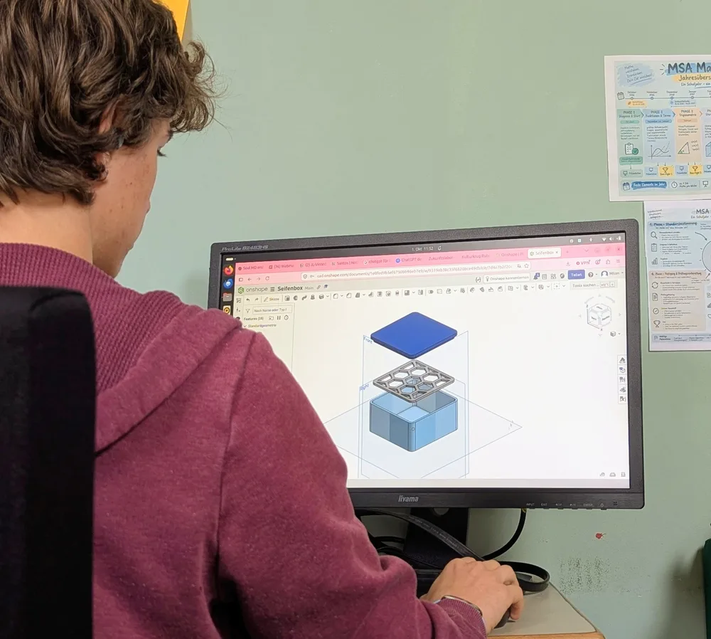
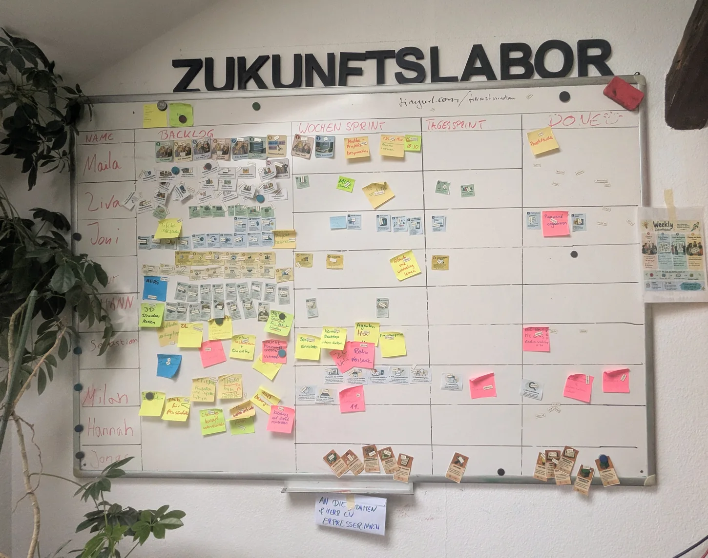
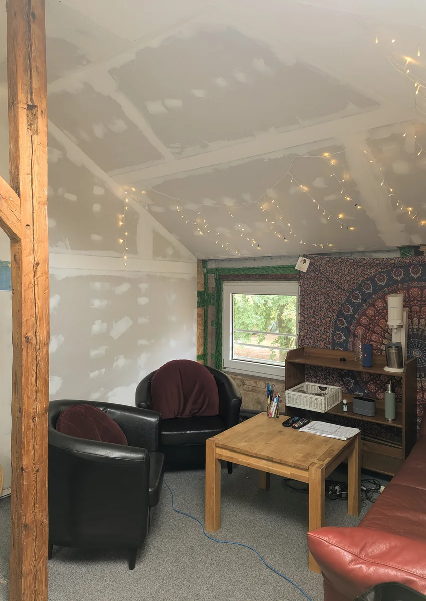

01
Projekte
Jugendliche entwickeln eigene Ideen und setzen sie in kleinen Schritten um. Sie probieren Lösungen aus und ändern ihren Plan, wenn etwas nicht klappt.

Hier entwickeln Jugendliche eigene Projekte, probieren Neues aus und gestalten ihren Lernweg selbst.
Warum es diesen Raum gibt
Jugendliche bringen eigene Fragen mit. Sie planen ein Vorhaben, probieren Lösungen aus und besprechen, was funktioniert hat. Erwachsene unterstützen sie dabei und geben einen verlässlichen Rahmen.
Eigene Interessen und Stärken entdecken.
Ein Vorhaben planen und Schritt für Schritt umsetzen.
Gemeinsam Lösungen suchen und Entscheidungen treffen.
Selbstbestimmung braucht Struktur, aber keine vorgegebenen Antworten.
Drei Wege, die zusammengehören
Wir arbeiten auf drei Arten: an eigenen Projekten, an gemeinsamen Herausforderungen und an persönlichen Zielen.
Jugendliche entwickeln eigene Ideen und setzen sie in kleinen Schritten um. Sie probieren Lösungen aus und ändern ihren Plan, wenn etwas nicht klappt.
Eine Challenge ist eine konkrete Aufgabe mit offenem Lösungsweg. Wir sammeln Ideen, probieren sie aus und besprechen die Ergebnisse.
Jugendliche überlegen, was sie lernen möchten, setzen sich Ziele und prüfen regelmäßig, wie sie vorankommen.
Ein 3D-Modell zeigt, wie eine Idee aussehen könnte. Am Entwurf lassen sich Varianten ausprobieren und Veränderungen direkt sehen.
Einblick in die Arbeit an einem digitalen Modell.
Mögliche Vorhaben
Drei Beispiele für Ideen, die Jugendliche selbst planen und umsetzen könnten.
Eine Spielidee entwickeln, Figuren und Regeln entwerfen, einen Prototyp bauen und testen – bis ein fertiges Spiel entsteht.
Regeln erfinden, Spielfeld und Karten gestalten, Proberunden spielen und das fertige Spiel für einen möglichen Verkauf vorbereiten.
Zum Beispiel ein Budget für ein Vorhaben planen: Kosten berechnen, den Plan umsetzen und am Ende prüfen, ob das Ziel erreicht wurde.
Freiheit hat einen Rhythmus
Daily, Checkout und Weekly helfen uns, Aufgaben zu planen und Fortschritte zu besprechen.
Wir teilen Fortschritte, formulieren Vorhaben für den Tag und sagen, wo wir Unterstützung brauchen.
Wir arbeiten an Projekten, lernen Neues, probieren Lösungen aus und helfen einander.
Wir schauen zurück: Was ist entstanden? Was haben wir gelernt? Was kommt als Nächstes?
Im Weekly sprechen wir darüber, wie es uns geht, wo die Projekte stehen und was wir für die Woche planen.

Wer moderiert oder auf die Zeit achtet, kann wechseln. Offene Fragen sammeln wir und besprechen sie später gemeinsam.
Auf dem Scrumboard sehen wir Aufgaben und ihren Stand. Bei einem Review schauen wir auf die Ergebnisse; in einer Retrospektive besprechen wir, was bei der Zusammenarbeit gut lief und was wir ändern möchten.

Arbeiten und miteinander sprechen
Hier gibt es Computerarbeitsplätze, einen gemeinsamen Tisch und einen Sitzbereich. Je nach Aufgabe arbeiten wir für uns oder sprechen uns mit anderen ab.
Erwachsene unterstützen in Gesprächen und bei Projekten. Bei Bedarf suchen wir Hilfe von Menschen außerhalb des Labors. Die Jugendlichen entscheiden über ihre Vorhaben mit.
KI kann beim Recherchieren, Lernen oder Programmieren helfen. Wir prüfen ihre Antworten und entscheiden selbst, was wir übernehmen.
Das Makerspace-Vorhaben
Das Zukunftslabor läuft als Pilot. Wir haben einen Raum mit Arbeitsplätzen und Sitzbereich, nutzen ein Scrumboard und arbeiten an Projekten und Challenges.
Für die Makerspace-Bewerbung möchten wir mehr Möglichkeiten schaffen, Ideen praktisch zu testen und Entwürfe zu verbessern. Welche Ausstattung dafür nötig ist, klären wir noch.
Das Gespräch ist offen
Wer das Zukunftslabor kennenlernen oder über eine Zusammenarbeit sprechen möchte, kann sich bald über die Schule melden.